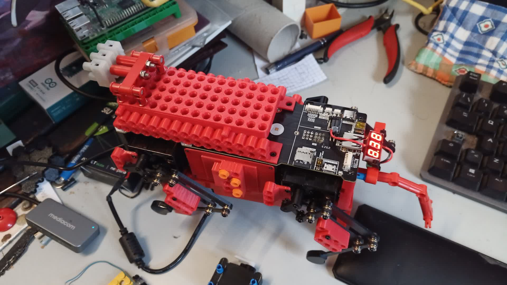
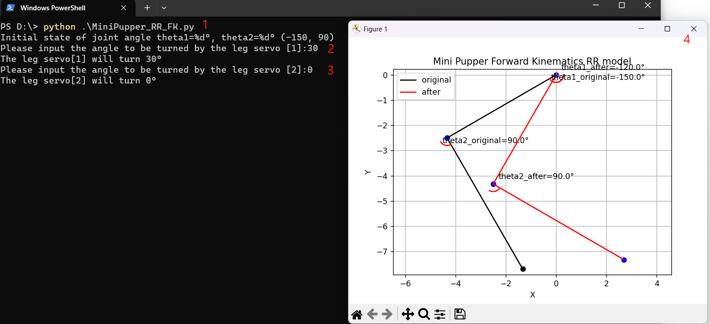

例
内容
1.カスタムシェルパーツ
Mini Pupperはオープンソースプロジェクトであり、あなたが望むものをカスタマイズすることができます。3Dプリントされたすべてのシェルファイルを見つけることができ、それらをカスタマイズすることができます。
LEGOのパーツに接続するのはどうだろう？
あるいは、@nisshan_さんのようにDIYするか。
2.カスタムフェイシャルアニメーション
2.1前提条件
HDMIディスプレイ
マイクロHDMIケーブル
キーボードとマウス
新しいカスタム画像(サイズ: 320x240 pix)
2.2Run
MiniPupperをディスプレイ、キーボード、マウスに接続します。
Ubuntuログイン(デフォルトパスワードはmangdang)
logo.pngファイルをカスタム画像で置き換える。
Mini Pupperを再起動すると、カスタム画像が表示されます。
3.キーボード・コントローラー
3.1 非ROSバージョンに基づくキーボードコントローラー
この機能はPupperKeyboardControllerプロジェクトに基づいています。PupperKeyboardControllerはPygameベースのStanford Pupper用キーボードコントローラーです。
PyGameをインストールする
pip install pygame
コントロール
wasd: left joystick
arrow keys: right joystick
q: L1
e: R1
ijkl: d-pad
x: X
square: u
triangle: t
circle: c
3.2 ROSバージョンに基づくキーボード・コントローラー
SLAMの項を参照のこと。
4.ウェブコントローラ
Mini Pupperウェブコントローラプロジェクトを参照してください。
5.Mini PupperPWMサーボの制御方法
ミニPupperサーボはPWMサーボで、以下の写真のようにPiボードにサーボを接続し、サンプルコードを実行すると、サーボが動きます。 コードはこちらにあります。 WindowsやUbuntuのPython環境で、以下の写真のように実行できます。
6.フォワード・キネマティクス
レクチャー
まずはネットでフォワードキネマティックスの基礎知識を勉強してください。
また、スタンフォード大学ロボット工学自主研究による以下のビデオクリップもご参照ください。
前方運動学講義
いくつかのことを明確にするためのフォローアップ講義
サンプルコード
Mini Pupperをベースにした簡単な順運動学のサンプルコードを用意しましたので、こちらで試してみてください。 WindowsやUbuntuのPython環境で、次の図のように実行できます。
7.インバース・キネマティクス
レクチャー
まずはネットでフォワードキネマティックスの基礎知識を勉強してください。
また、スタンフォード大学ロボット工学自主研究による以下のビデオクリップもご参照ください。
サンプルコード
Mini Pupperをベースにした簡単なインバースキネマティクスのサンプルコードを用意しましたので、こちらでお試しください。 WindowsやUbuntuのPython環境で、以下の図のように実行することができます。
8.PID制御
後で更新する！
9.ドッカー
9.1 Docker forPupper
Mini Pupper ROSパッケージのDockerfileは、docker-mini-pupper-rosプロジェクトに由来します。
9.2 Docker forHost
ネットワークを介してMini Pupperとインターフェースするためのホストコンピュータのセットアップは、mp_host_setupプロジェクトから来ています。
10.Scratchプログラム
近日中に更新する予定だ！